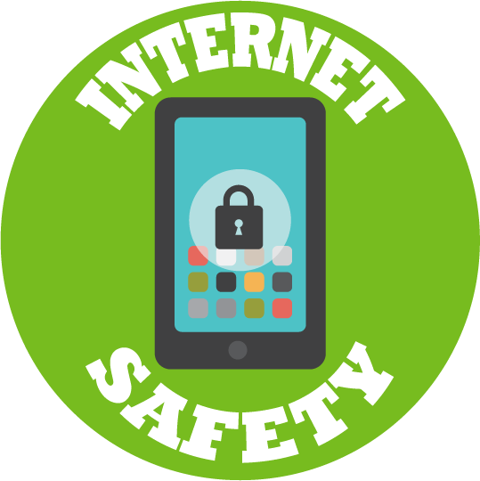

ConnectSafely.org
ConnectSafely.org is a Silicon Valley, California-based nonprofit organization dedicated to educating users of connected technology about safety, privacy and security. Here you’ll find research-based safety tips, parents’ guidebooks, advice, news and commentary on all aspects of tech use and policy. Whether it’s social media, mobile technology or the “Internet of Things,” connected technologies bring us enormous advantages, along with some challenges. ConnectSafely’s job is to help users get the most from their technology while managing the risks and help decision makers craft sensible policies that encourage both innovation and responsible use. ConnectSafely has been a leading voice for rational, research-informed policies — not “moral panics” — when it comes to dealing with challenges brought about by emerging technologies.
We are the U.S. host of Safer Internet Day, a global celebration that takes place on the second Tuesday of each February, and founders of the One Good Thing campaign to surface and celebrate the many ways people of all ages and cultures use connected technology to make the world a better place.
